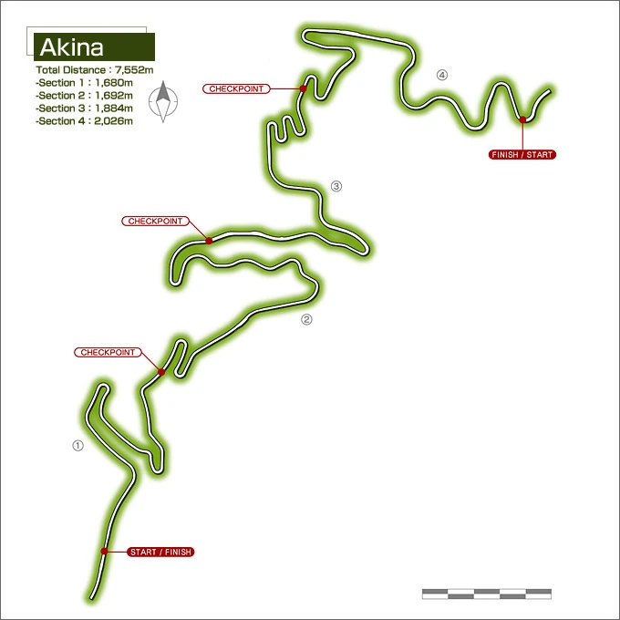
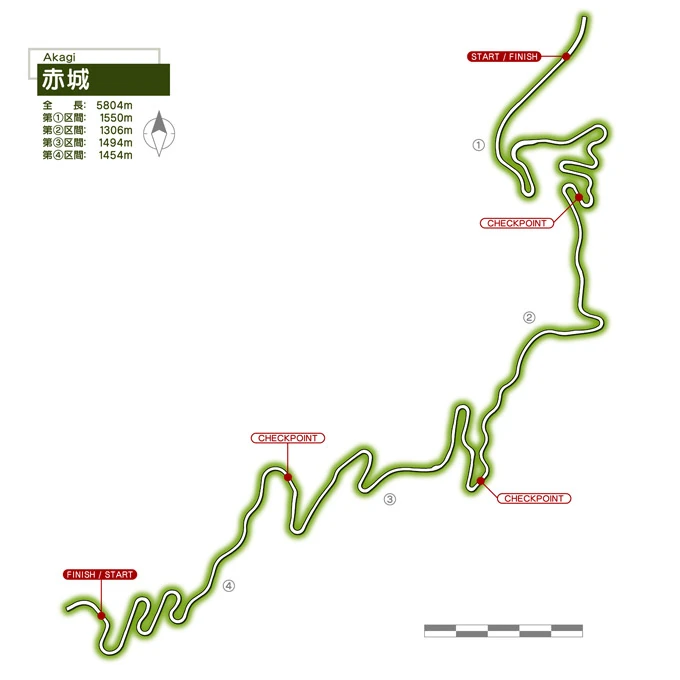
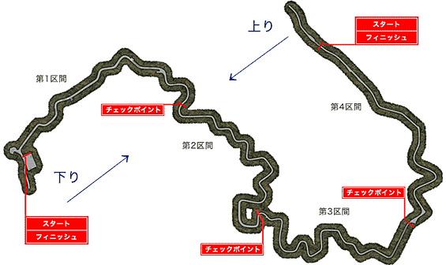

Gunma Prefecture
Gunma Prefecture, located in the mountainous Kanto region, is renowned not only for its breathtaking natural landscapes but also as a hotbed for street racing. The rural, winding roads that cut through the mountains are famous among racers for their challenging curves, steep climbs, and sharp hairpin turns—making the region an iconic destination for both experienced drivers and adrenaline seekers.
The most famous of these racing routes is Akina, a mountain pass that has earned its reputation as one of the most difficult tracks in the region. Known for its sharp corners and narrow roads, Akina is a proving ground where only the most skilled drivers can thrive. Other famous passes such as Irohazaka and Usui offer similarly intense challenges, with racers navigating treacherous conditions to maintain their speed and control.
For years, Gunma’s roads have been the stage for fierce rivalries between racing teams. From the street-smart local drivers to the well-organized racing teams that travel from all over the country, the region sees a constant flow of high-speed battles. Whether it’s the tight-knit Akina Speed Stars or the more aggressive teams that call the highlands their home, the area has become synonymous with both thrilling victories and crushing defeats.
Beyond the races, the local car culture is deeply embedded in the lives of its residents. Car tuning shops, tire dealers, and performance garages line the streets, each offering services to fine-tune machines for the next race. It’s a culture of innovation and craftsmanship, where the pursuit of speed and precision in driving is just as much a way of life as it is a sport.
Gunma Prefecture’s mountain roads remain a sacred space for those who live for the rush of racing, with the picturesque views and challenging terrain standing as the perfect backdrop for the legends of the road. For racers, the prefecture is not just a location—it’s where skills are honed, rivalries are forged, and the road to victory begins.
Mount Akina
Mount Akina (秋名山 Akina-san) is a mountain located in Takasaki, Gunma Prefecture. The course is famous for it's five consecutive hairpins.
Akina is the home course of the Akina SpeedStars, as well as Bunta and Takumi Fujiwara. Bunta was the fastest driver on Akina for many years, but is no longer active as a street racer and most locals are unaware of him. The deliveries for his tofu business travel through the pass, and he used this to train his son Takumi as a racer. After his racing debut, Takumi became known as "Akina's Eight-Six" and was considered to be the fastest racer on Akina, eventually setting the downhill course record in an untimed run.
Mount Akina is based on Mount Haruna (榛名山 Haruna-san), a dormant stratovolcano in Takasaki, Gunma. Along with Myogi and Akagi, it is one of the "Three Mountains of Jōmō" (上毛三山). Akina Pass is a section of the Jomo-Sanzan Panorama Highway on the north-eastern side of the mountain, which falls within the borders of Shibukawa. In the live action film the Yahikoyama Sky Line in Niigata is used to represent Akina.
Rising majestically in Gunma Prefecture, Mount Akina is more than just a natural landmark—it's the beating heart of the region's street racing culture. Known for its winding, treacherous mountain pass, Akina has become a revered and feared destination for racers seeking to prove their skill and endurance. Its narrow, winding roads with sharp hairpin turns and dramatic elevation changes make it one of the most challenging routes in the entire country, earning it a reputation as a true test for drivers who wish to make their mark.
The road up Akina is a series of twists and turns that require absolute precision. The uphill climb demands powerful acceleration and the ability to navigate through tight corners at high speeds, while the downhill descent tests braking techniques and control. Every curve on Akina is a puzzle, and the slightest miscalculation can lead to disaster. Yet for those who master it, the mountain provides a thrill like no other, offering the perfect environment for street racing battles.
The lower slopes of Akina are lined with dense forests, providing a tranquil atmosphere that contrasts sharply with the high-speed chaos of racing on the upper reaches of the mountain. The road is often foggy in the early mornings or late evenings, adding an extra layer of challenge as visibility becomes limited. These conditions demand not only mechanical mastery but also the sharpest instincts from the drivers who brave its paths.
For generations, Mount Akina has been the site of countless rivalries between local drivers and visiting teams, each aiming to conquer the mountain and establish their dominance. From secretive street races at night to full-blown team battles, Akina’s roads have seen it all. For some, conquering Akina is a rite of passage—an essential milestone in their racing journey that cements their reputation as a top-tier driver.
More than just a physical challenge, Mount Akina holds deep cultural significance for those who race its roads. It is a symbol of resilience, skill, and the relentless pursuit of perfection. With its beautiful yet perilous landscape, Akina stands as a timeless arena where legends are born and the best drivers rise to the occasion.
Mount Akagi
Mount Akagi (赤城山 Akagi-yama) is a mountain in Gunma Prefecture, Japan.
Mount Akagi, along with Myogi and Haruna, is one of the "Three Mountains of Jōmō" (上毛三山), and the cold north winds down from it are called Akagi-oroshi (赤城おろし) or Karakkaze (空っ風).
In Initial D, Akagi serves as the home course of the Akagi RedSuns. Akagi is where the battle between Takumi Fujiwara and Kyoichi Sudo was held which resulted in Takumi blowing up his AE86's engine. Kyoichi later attempted to beat his past rival Ryosuke in the same place, but was unsuccessful after Ryosuke managed to overtake him on the last corner. Keisuke's impromptu battle with Wataru is also held here.
Dominating the skyline of Gunma Prefecture, Mount Akagi is a legendary racing destination known for its breathtaking beauty and the challenge it offers to even the most seasoned drivers. Its winding roads, steep ascents, and sweeping turns make it a favorite among racing teams, who flock to its slopes to push their limits and prove their skills on one of the most demanding tracks in the region.
The road that snakes up Mount Akagi is a test of both precision and speed. Drivers must navigate a series of sharp curves, blind corners, and rapid elevation changes, each requiring perfect control and lightning-fast reflexes. The mountain's terrain is diverse, offering a combination of tight, technical turns and fast, open stretches that reward drivers who can balance raw speed with delicate handling. The contrast between the uphill challenges and the high-speed descents creates a dynamic racing experience, with every corner presenting an opportunity for victory—or disaster.
Mount Akagi’s dense forests and steep slopes add an element of danger to the racing experience. The roads are often shrouded in mist during early mornings or evenings, reducing visibility and heightening the stakes for drivers as they navigate the unforgiving curves. On a clear day, the panoramic views from the mountain are awe-inspiring, but for the racer, the only thing that matters is the road ahead and the challenge it represents.
Racing on Mount Akagi is not just about speed—it’s about control, technique, and the ability to maintain focus through the mountain’s demanding twists and turns. Unlike some other racing routes that might favor power or brute force, Akagi is a place where skillful cornering and smooth execution can make all the difference. The mountain’s combination of technicality and scenic beauty makes it a revered location in the racing community, with many drivers considering it the ultimate proving ground for their abilities.
For those who master Akagi’s roads, the mountain becomes a symbol of their talent and determination. Whether racing alone or in teams, drivers find themselves drawn to the mountain’s challenge time and time again, making Mount Akagi a central piece of the high-stakes racing culture that defines Gunma Prefecture.
Mount Myogi
Mount Myōgi (妙義山 Myōgi-san) is one of the major mountains in the Gunma Prefecture, Japan, located west of Tomioka. It is well known for its rocks weathered into fantastic forms. This famous peak is ranked among Japan's three most noted places of rugged beauty. There are many hiking courses, and when the foliage changes color there are splendid views to be seen.
Mount Myōgi, along with Mount Akagi and Mount Haruna, is one of the "Three Mountains of Jōmō". (Jōmō is an old name for Gunma.)
Mount Myōgi is the home course of the racing team called the Myogi NightKids.
One weakness for drivers on Myogi is that it is a more straight course so cars like the Suzuki Cappuccino and the Mazda MX-5 will fall behind (if not modified/modded lightly)
Nestled in the rugged terrain of Gunma Prefecture, Mount Myogi stands as one of the most revered and challenging racing destinations in the region. Known for its stunning rock formations and winding mountain roads, Myogi offers a unique blend of natural beauty and high-stakes racing challenges. The pass here is notorious for its combination of sharp, narrow turns and steep inclines, making it a proving ground for drivers seeking to test their skills and push their vehicles to the limit.
The road up Myogi is a difficult and relentless series of hairpin curves and sweeping turns that require absolute precision and finesse. Unlike other passes that may emphasize speed or power, racing on Myogi is all about technique. Drivers must navigate its twists with the utmost control, as the steep drops and unpredictable road conditions leave no room for error. Every corner demands a calculated approach, and the slightest misjudgment can send a car careening off the edge or into the unforgiving mountain terrain.
The climb up Myogi’s roads is particularly punishing, with the road often narrowing as it winds through dense forests and rocky cliffs. Fog and mist are common, adding to the challenge and reducing visibility, which only heightens the intensity of the race. As drivers approach the higher altitudes of the mountain, the air thins, and the road steepens, demanding even more from both the car and the driver. For the experienced racer, this is a place to demonstrate not just speed, but the ability to handle extreme conditions with confidence.
Myogi’s reputation has made it a sought-after location for rivalries between street racing teams. From the aggressive, high-speed battles to the quieter, more technical challenges, Mount Myogi offers something for every type of racer. It's a place where control is paramount, and only those with the sharpest instincts and the steadiest hands can rise to the occasion.
Despite its difficulty, Mount Myogi also holds a certain allure for racers who understand that mastering its roads is a true testament to their skill. For many, conquering Myogi is not just about winning races—it's about proving that they have what it takes to thrive under pressure and to tame one of the most challenging routes in all of Gunma. The mountain stands as a symbol of the relentless pursuit of perfection, where every curve, every turn, and every moment on the road is a test of character and capability.
Mount Usui

Rising through the heart of Gunma Prefecture, Mount Usui is a legendary racing pass known for its steep ascents, fast stretches, and dramatic changes in elevation. With its reputation as one of the most challenging routes in the region, Usui draws racers seeking to push their limits on both the uphill and downhill sections of the mountain. The road is infamous for its demanding combination of high-speed straightaways and hairpin turns, making it a true test of both acceleration and precision handling.
The unique aspect of racing on Mount Usui is its dual nature. The road begins with an exhilarating climb, where drivers must summon all their power to handle the steep inclines and tight curves that make the ascent such a challenge. Maintaining high speed while carefully navigating each corner is a true test of a car’s power and a driver’s ability to keep control under pressure. The change in altitude demands skillful management of torque and acceleration, with racers constantly adapting their techniques to the ever-changing road conditions.
Once the summit is reached, the real challenge begins. The downhill descent of Usui is an intense experience, with long, sweeping turns and sharp drops that require expert braking control and an intuitive feel for the road. Racing downhill on Usui is not for the faint of heart; it demands perfect timing and balance, as the risk of losing control increases with every turn. One false move can send a car skidding off the road or into the guardrails, turning what was once a thrilling race into a moment of disaster.
The winding roads of Usui also offer ever-changing scenery, from dense forests to wide, panoramic views, adding to the intensity of the racing experience. Fog is common early in the morning or late at night, further complicating the already difficult terrain. As one of the most popular locations for street racing teams, Usui sees regular battles between some of the fastest and most skilled drivers in the area, making the mountain a hotspot for rivalries and high-stakes showdowns.
For those who conquer Usui, the mountain becomes a symbol of not only raw speed but also masterful control and adaptability. Racing on Usui isn’t just about acceleration or cornering; it’s about the driver’s ability to manage the changing conditions and remain composed in the face of a challenging, unpredictable course. With its combination of speed and precision, Mount Usui stands as a pinnacle of racing in Gunma, where only the most skilled drivers rise to the top.
MAIN MENU